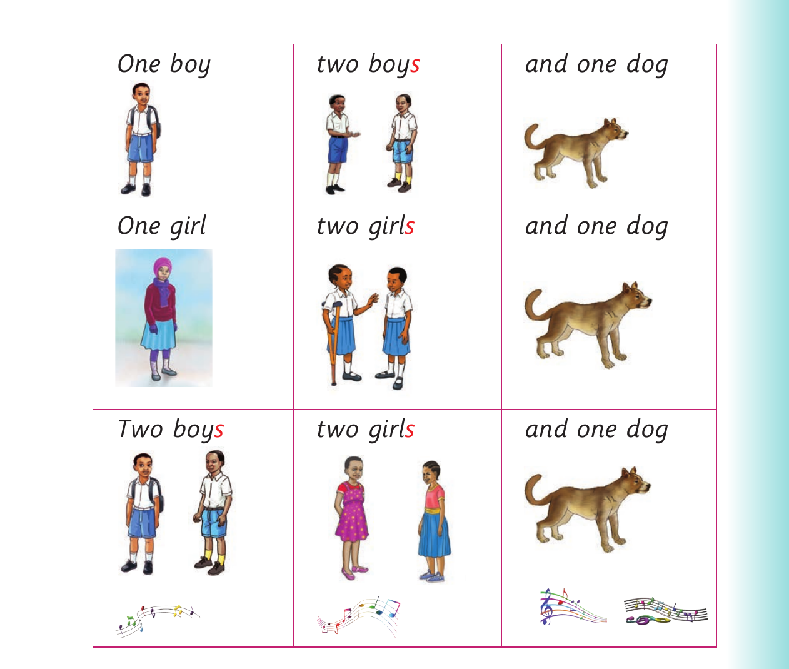

Singular and plural forms - song and dialogue

One boy two boy s and one dog One girl two girl s and one dog Two boy s two girl s and one dog
Source: https://www.youtube.com/watch?v=rzq9eiYt9Bg 6. Act out the following dialogue:
Ann : Do you like fruits? Ali : Yes, I do. Ann : What type of fruits do you like?
Ali : I like mangoes.
Source for the singular and plural song: https://www.youtube.com/watch?v=rzq9eiYt9BgSource for the singular and plural song